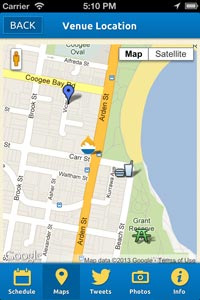
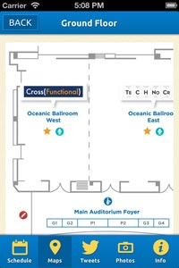
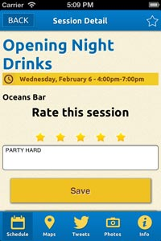

DrupalCon Sydney 2013 Guide update


Since we announced and released the DrupalCon Sydney 2013 Guide a few weeks ago, we've seen quite a few people download it and give us feedback for it. Thank you, we really appreciate it! However, we decided that we weren't done with the app yet, and so we'd like to let you know about the update we've prepared for it.
 First things first: the update is out now on Android. Go to the Google Play store and get it, or get your device to update it for you.
First things first: the update is out now on Android. Go to the Google Play store and get it, or get your device to update it for you.
 The iOS update is out now as well. Go to the iTunes Store on your device and update it.
The iOS update is out now as well. Go to the iTunes Store on your device and update it.
Now, here's some of the details about what's in the update:
Photo stream
We've set up a new feature that will let you take photos while you're at DrupalCon and share them with everyone else there. All the photos in the stream are shared in the Photos tab – check it out to see what everyone's up to.
 If you'd like to take a photo and share it, do the following:
If you'd like to take a photo and share it, do the following:
- Get out your phone (or your tablet if you're super rad)
- Open the DrupalCon Sydney 2013 Guide
- Touch the Photos tab in the toolbar
- Touch the Take button in the heading
- Touch the Take Photo button
- Take your photo; once you're happy with it, return to the app
- Touch the Post Photo button
- (optional) You can tweet the image with a link from the app
That's all you need to do to submit your photo to the DrupalCon Sydney photo stream. You will also be given the option to tweet a photo right after you've taken it.
Photo Contest!
We got so excited about the new photo feature that we decided to run a photo contest for those of you attending the conference. Just share your pictures from the app on twitter with the #cfdcsyd hashtag and you'll have a chance to win a Drupal Bobblehead - you can also go into the drawing for an iPad mini. See the competition page for all the details.
Maps
 We've brought in the venue maps from the printed guide, courtesy of Lee Olsen from ShiftRefresh. Just pinch to zoom (or double-tap if you're on an old version of Android) and you're away.
There's also a brand new Venue Location map that shows you the location of the venue, as well as a whole bunch of landmarks around Sydney that we think are worth seeing while you're here. It will also attempt to place a little Druplicon wherever you are, to help you work out where the venue is in relation to you, and maybe even help you get there.
Session ratings
We've added a new feature to the session listing that lets you assign a rating to sessions and give a short comment as feedback. We're intending on sharing this information with the Drupal Association once DrupalCon is done and dusted, so we'd like anyone who uses the app to review sessions that they've been to. It's easy to pop open the review panel, assign a star rating, and leave a comment.
If you're worried about sharing too much, or about whether submissions are attached to a particular person's name, don't be. We don't attach submissions to a particular person. While we do try and make sure that there's one set of submissions per app, we only do so to make sure the feedback is good.
Of course, keep in mind there are real people on the other side. Be honest, but be considerate too!
Session listing & information updates
You might have noticed that we've updated the session listing in the app. We now include a Day 0, which covers the Drupal Business Day and Training, and Day 3 which covers the code sprint and other ancilliary events.
We've also pulled in more information from the website so you can have it on hand wherever you go. As we get closer to the event, we'll see if we can pull in some more. If you have any suggestions, we'd like to hear them.
Bug fixes
It's kind of awkward to say so, but the first version of the DrupalCon Guide shipped with a several bugs. A lot of these weren't particularly nice, and some actually really got in the way of being able to use the guide as intended.
Below is a list of some of the bugs we stomped.
- Improved scrolling behaviour
- External links open in browser
- Maps behave much more nicely
- Offline behaviour and data updates refined
- Links in tweets are handled correctly
There are probably some other bugs in the app that haven't been solved, but nothing critical we think. However, if you could report any you find to us, we'd be most grateful.
Also, once DrupalCon's over, we might revisit our post that covered the development of the app, and go into the process of developing hybrid mobile apps in a bit more detail.
That's all for now, we hope you download the update and make the most of it. See you at DrupalCon!


{kind=link}
{kind=link}
{kind=link}
Add new comment